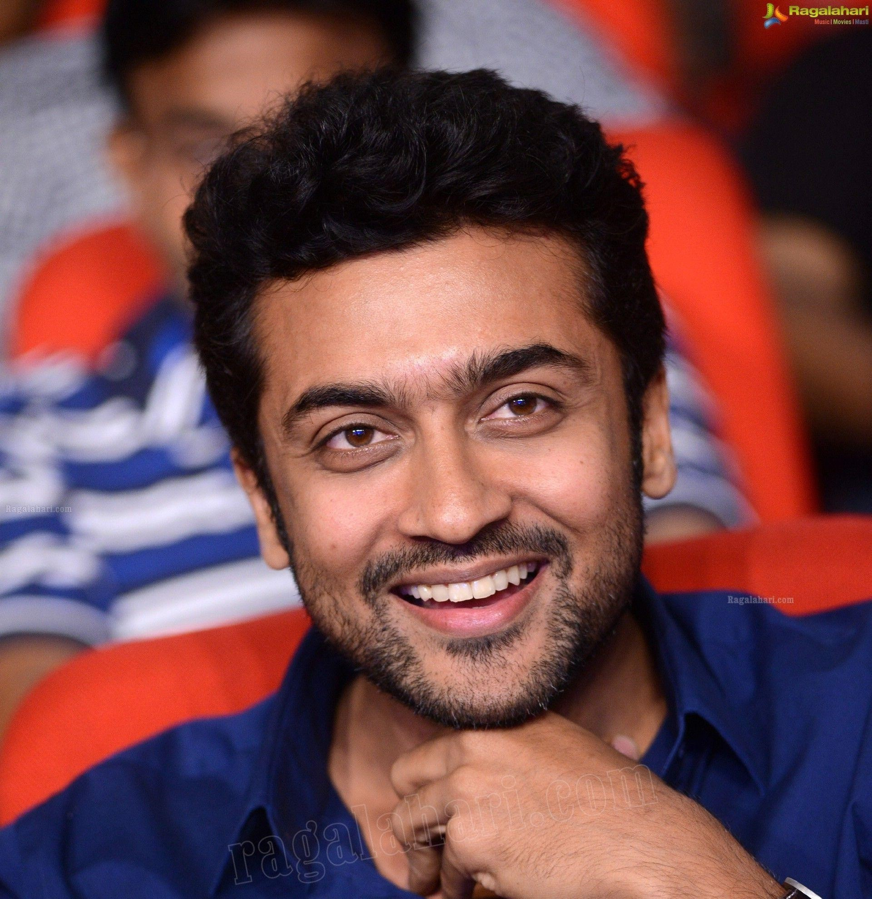

suriya

<>
Saravanan Sivakumar (born 23 July 1975), known by his stage name Suriya, is an Indian actor and film producer who primarily works in Tamil cinema where he is one of the highest paid actors.[3][4][5][6] He has received numerous awards including two National Film Awards,[7] six Filmfare Awards South, five Tamil Nadu State Film Awards and two SIIMA Awards.[8] Suriya has featured six times in the Celebrity 100 list of Forbes India, which takes into account the earnings of Indian celebrities.
After making his debut in Nerukku Ner (1997) at the age of 22, Suriya landed his breakthrough role in Nandha (2001) and then had his first major commercial success with the thriller Kaakha Kaakha (2003). Following award-winning performances of a conman in Pithamagan (2003) and a hunchback in Perazhagan (2004), he played a man suffering from anterograde amnesia in the 2005 blockbuster Ghajini. He rose to stardom with dual roles of a father and son in Gautham Vasudev Menon's semi-autobiographical Vaaranam Aayiram (2008). His status as an action star was established with roles of a smuggler in Ayan (2009), and an aggressive cop in the Singam trilogy. He also found success with the science fiction films 7aum Arivu (2011) and 24 (2016) and then went on to work in critically acclaimed films like Soorarai Pottru (2020) and Jai Bhim (2021), the former of which earned him the National Film Award for Best Actor.[9]
Suriya is the elder son of actor Sivakumar and his younger brother Karthi is also an actor. In 2006, he married actress Jyothika whom he co-starred with in 7 films. In 2008, he began Agaram Foundation, which funds various philanthropic activities. The year 2012 marked his debut as a television presenter with the Star Vijay game show Neengalum Vellalam Oru Kodi, the Tamil version of Who Wants to Be a Millionaire?. In 2013, Suriya founded the production house 2D Entertainment.[10][11]
Early life and family
Suriya was born as Saravanan on 23 July 1975 in Madras (now Chennai), Tamil Nadu, to actor Sivakumar and his wife Lakshmi. He attended Padma Seshadri Bala Bhavan School[12] and St. Bede's Anglo Indian Higher Secondary School in Chennai,[13] and obtained his under graduate degree B.Com from Loyola College, Chennai.[14] Suriya has two younger siblings, a brother Karthi and a sister Brindha. His mother tongue is Tamil.
Suriya with his wife Jyothika at the launch of her film Kaatrin Mozhi
Suriya is married to long-time girlfriend, actress Jyothika. The couple, after dating for several years, got married on 11 September 2006.[15][16] They have two children, a daughter and a son.[17][18]
Early life and family
Suriya at the 68th National Film Awards ceremony
1997–2002: Early career
Prior to his career in films, Suriya worked at a garment exports factory for eight months.[19] He did not reveal himself to his boss as Sivakumar's son, but his boss ultimately learnt the truth himself.[20][21] He was initially offered the lead role by Vasanth in his film Aasai (1995), but he rejected the offer citing a lack of interest in an acting career.[14] He later debuted in Vasanth's own 1997 film Nerrukku Ner, produced by Mani Ratnam when he was 22 years of age. The stage name "Suriya" was bestowed to him by Ratnam to avoid a clash of names with established actor Saravanan. The name "Suriya" was frequently used for characters in Ratnam's films.[22] Vijay, who co-starred with him in the film, would also go on to become a leading contemporary actor in Kollywood.[23]
This was followed by a series of roles in commercially unsuccessful films in the late 1990s. In 1998, he starred in the romantic film Kaadhale Nimmadhi. In July the same year, he had another release Sandhippoma. Subsequently, he acted with Vijayakanth in the film Periyanna (1999), directed by S. A. Chandrasekhar. He then appeared twice with Jyothika in Poovellam Kettuppar (1999) and Uyirile Kalanthathu (2000). In 2001, he starred in Siddique's comedy film Friends, also co-starring Vijay, which became a commercial success.
Suriya confessed that he struggled due to lack of confidence, memory power, fighting or dancing skills in his early career, but it was actor Raghuvaran, one of his mentors, who advised him to create his own identity, rather than stay under his father's shadow.[24]
His major break came in the form of the action drama Nandha, which was directed by Bala. Playing the role of an ex-convict who is very attached to his mother, he received a Tamil Nadu State Film Award for Best Actor, in addition to his first nomination for the Filmfare Award for Best Actor – Tamil.[25] His next venture was Vikraman's romantic drama Unnai Ninaithu followed by the action drama Sri and the romantic drama Mounam Pesiyadhe directed by Ameer Sultan, the lattermost of which earned him his second nomination for the Filmfare Award for Best Actor – Tamil.
2003–2007: Experimentation and success
In 2003, he starred in Gautham Vasudev Menon's Kaakha Kaakha, a film about the life of a police officer. The film received positive reviews upon release with a critic from Rediff.com claiming that "Suriya as Anbu Selvan fits the role and this film is certainly a career high for him".[3] The film emerged as Suriya's first major blockbuster at the box office and earned him his third nomination for the Filmfare Award for Best Actor – Tamil. His portrayal of a happy-go-lucky village crook with a comic touch in Bala's Pithamagan, co-starring Vikram, won him the Filmfare Award for Best Supporting Actor – Tamil.[26] In 2004, he played dual roles in Perazhagan, as an aggressive boxer and a handicapped phone booth keeper. Suriya's performance received highly positive reviews from critics with a reviewer describing it as "Suriya deserves appreciation for his astounding performance. He is at his best be it humor or action. The actor has scored a hat trick".[27] The film emerged as a commercial success at the box office,[28] and Suriya won his first Filmfare Award for Best Actor – Tamil for his performance.[29] The same year, he portrayed the role of a student leader in Mani Ratnam's political drama Aayutha Ezhuthu along with Madhavan and Siddarth. The film received high critical acclaim and was also commercially successful.
Suriya signed on to feature in the psychological thriller, Ghajini directed by A. R. Murugadoss in November 2004. He played the role of a businessman suffering from anterograde amnesia. Ghajini emerged as a blockbuster at the box office and was the third highest-grossing Tamil film of the year. Suriya's performance was unanimously praised, with a reviewer from Sify citing that "the film is driven by Suriya's riveting performance".[30] The film was dubbed in Telugu under the same name and was again a box office success, earning him fame in Andhra Pradesh.[31] Suriya received his fifth nomination for the Filmfare Award for Best Actor – Tamil for his performance in the film. Later that year, he worked in Hari's action film Aaru, which was moderately successful at the box office.[32] His performance received positive reviews with a reviewer citing that "Suriya keeps you riveted to the seats with another wholesome effort".[33]
In 2006, appeared in a cameo role in Jyothika starrer June R. In the same year he starred with Jyothika and Bhumika Chawla in N. Krishna's film Sillunu Oru Kaadhal. The film took a strong opening. It had an average response from critics,[34][35] but his performance was praised, with a reviewer from Sify citing that "Suriya pitches in with yet another fantastic performance, be it the responsible husband and father, or the cool dude at college".[36] In 2007, his only release was director Hari's Vel, where he was paired with Asin for the second time after Ghajini. The film, which featured him in dual roles, was commercially successful.[37]
2008–2013: Continued commercial success and stardom
Suriya with Kajal Aggarwal on the sets of Maattrraan (2012)
His next release was another collaboration with Gautham Vasudev Menon after the success of Kaakha Kaakha. Suriya began work on Menon's biopic Vaaranam Aayiram in November 2007.[38] Playing dual roles for the third time in his career, Suriya appeared as father and son, with both characters demanding scenes shot throughout their lives ranging from scenes as a 16-year-old to scenes as a 65-year-old. During the production of the film, Suriya described the project as "unique" and "straight from the heart", describing the physical hardships he endured during the making.[39] He lost weight and prepared a six pack for the film through an eight-month fitness regime without steroids, with the move being a trend-setter for other leading actors from South India.[40][41] The film, which featured him alongside Simran, Sameera Reddy and Divya Spandana, became commercially successful at the box office upon release and received positive reviews from film critics, with Suriya's dual role performance being lauded. A critic from Rediff labelled the film as his "magnum opus", citing that he is "perfect" and that the film for him is a "justified triumph".[42] Similarly, critics cited Suriya's performance as "outstanding" and claimed that the film "works because of his performance", whilst other reviewers claimed the film was an "out and out Suriya show".[43][44] His portrayals also fetched him several notable awards, including his second Filmfare Award for Best Actor – Tamil, a Tamil Nadu State Film Award Special Prize and the Vijay Award for Best Actor for 2008.[45] The film also went on to receive a National Film Award for Best Feature Film in Tamil for 2008.[46]
In 2009, Suriya's first release was K. V. Anand's action-thriller Ayan. With Suriya portraying the role of a smuggler, the film also featured Prabhu as his guardian and Tamannaah Bhatia as the lead actress. The film was shot extensivel